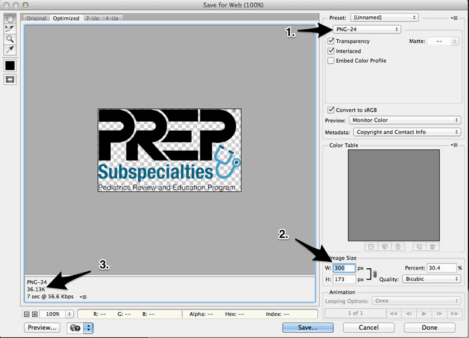
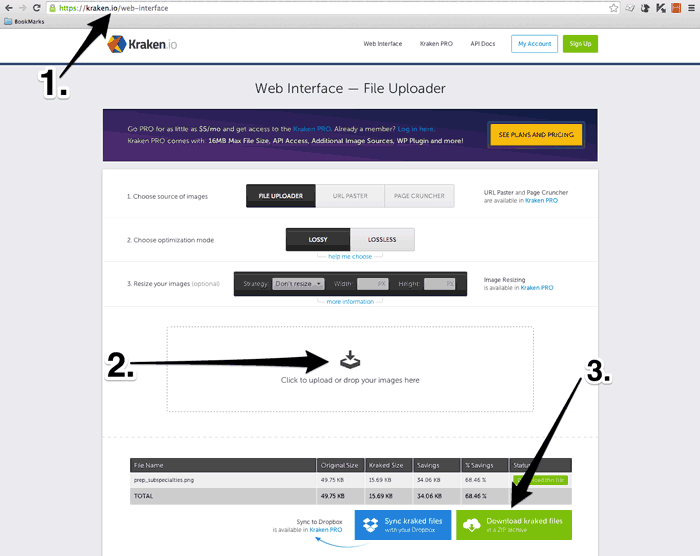
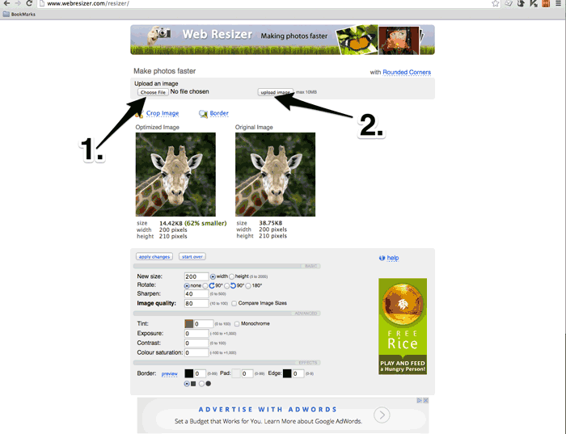

Images
The preferred image format for AAP.org is PNG (.png). JPEGs (.jpg) will be accepted as well if they're submitted in an optimized format (ie, they aren't over 1mb [1,000k] in size). Many photos taken on smartphone or a personal high-megapixel camera are too large to be added to AAP.org. Here are the requirements for images:
General Requirements
- < 800px width
- < 100k in size
- PNG or JPG
- File size is very important w/r/t site speed. One of the leading factors for slow page loads on AAP.org is unoptimized images.
Web Page (ie, images embedded in the page body)
- ≤ 300px width
- ≤ 150k in size
- PNG or JPG
- File size is very important w/r/t site speed. One of the leading factors for slow page loads on AAP.org is unoptimized images.
Photoshop
There are multiple ways to optimize your images for the web. The first is with Adobe Photoshop:
- Open the image with Adobe Photoshop
- Select File > Save for the web...

- The following screen will open: 
- Select either "PNG-8" or "PNG-24" from the dropdown menu, depending on which option provides the best quality with the greatest reduction in file size.
- Select your image size according to the specs above. Make sure that the link is selected so that width and height automatically adjust in size.
- Make sure the file size is within the limits noted above.
- Press "Save..." and save according to the new naming conventions for images.
Optimize Online
The Kraken Online Optimizer
If you do not have Photoshop on your computer, there are multiple free online tools that can optimize and/or resize your images for free.
Kraken is a paid tool, but the free online version will work well to optimize your image and reduce the file size.
- Go to the Kraken web site
- Drag and drop your image to the selected spot in the browser
- Download the zip file to your desktop. The zip file can then be opened, and you can resize and rename it according to the new standards and naming conventions.

Web Resizer
- Once at the Web Resizer site, select "choose file" and select the image you want to upload
- Select "upload image" 
- Your optimized image will come up on the left with
- Your original image on the right
- You can use the resizing features to change the size of the image
- Select "download this image" to save a copy for yourself. Then rename it according to the [naming conventions] and submit it to AAP.org/websites.

The above examples are just a couple of the many free online image optimizers that will come up with a typical Google search for "optimize images online."
Video
Video needs to be submitted to the Ooyala platform before being published elsewhere. Video needs to be submitted to Peter Lynch in a web-friendly format (ie, MP4). Video created in proprietary formats (ie, .wmv) should be converted before being submitted. There are a variety of free converters available both as online applications and desktop applications.
- Private. The video will only be featured on AAP websites and will be streamed via the Ooyala player.
- Public. The video will still be stored and managed via Ooyala but will be made public via the AAP Tv YouTube channel.
When you submit a video request to AAP.org/websites, please be sure to include the necessary front matter and let us know whether the video is private or public, as well as where you would like the video to be featured within your site.